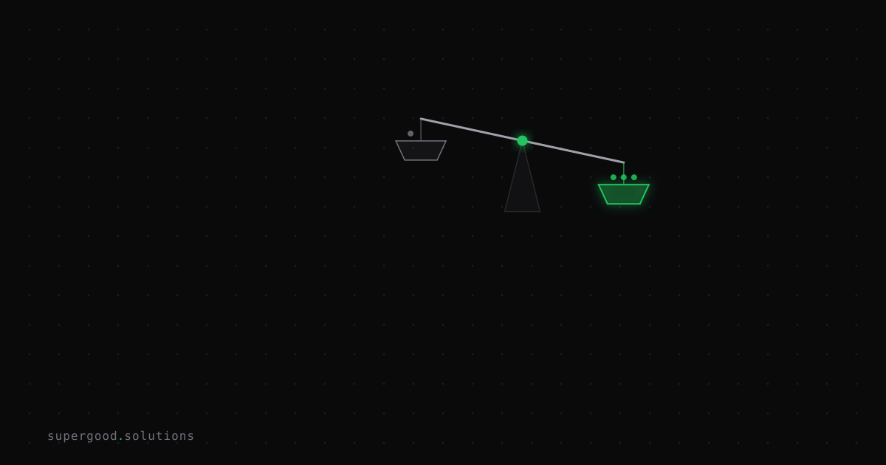

When Your AI Platform Starts Serving Two Masters
TL;DR: OpenAI put ads in ChatGPT and enterprise buyers waved it off because enterprise tiers are ad-free — which is the wrong reading. The real lesson is that your model provider's optimization target is a variable you don't control and can't observe, and it can change without you deploying anything.
Key Insight
In January 2026, OpenAI announced ads for the free and Go tiers. The post is careful and, honestly, better than it had to be. It commits to answer independence — ads don't influence responses, they sit below the answer, clearly labeled. It commits to not optimizing for time spent. It excludes health, mental health, and politics. Plus, Pro, Business, and Enterprise stay ad-free.
Most enterprise architects read "Enterprise stays ad-free," concluded it was a consumer story, and moved on.
That's a category error, and it's worth naming precisely: you have been procuring a media business using an infrastructure procurement checklist.
Infrastructure vendors and media businesses have structurally different relationships with your workload. When you buy object storage, the vendor's only path to more revenue from you is to be so reliable and cheap that you store more bytes. Their incentive is perfectly aligned with yours, permanently, by construction. There is no second customer.
A media business has a second customer. As of August 2026, OpenAI's ad business reportedly hit a $1 billion annualized run rate — inside of seven months, across 40-plus countries. That is not a side experiment anymore. That is a business line with its own targets, its own org, and its own quarterly pressure. And every organization that has ever had one of those has eventually discovered that the boundary between "the answer" and "the ad" is a policy choice, not a law of physics.
To be clear: I am not predicting OpenAI breaks its principles. The contrarian claim is narrower and more useful than a prediction. It's this — the stability of your vendor's incentives is now an input to your architecture, and you have no instrument that measures it.
Why Teams Miss This
Three reasons, and they compound.
We inherited "AI is the new electricity" and took it literally. Utilities are regulated, commoditized, and have exactly one product. Frontier model providers are none of those things. They're venture-funded companies with enormous capital costs, actively searching for revenue lines. That search is supposed to produce surprises. Treating a company in that phase as a utility is a modeling error, not a philosophy.
Your SLA covers the wrong nouns. Go read yours. It will guarantee uptime, latency percentiles, support response times, data handling, and maybe a deprecation notice window. Show me the clause that guarantees the distribution of outputs stays within tolerance. It isn't there — not at OpenAI, not at Anthropic, not at Google. Nobody sells that, because nobody can. So teams end up with contractual protection against the failure mode they'd notice in ten seconds (the API is down) and zero protection against the one that could run undetected for a quarter (the answers changed).
Behavior drifts without a version bump. This is the load-bearing technical fact. Even when you pin a model snapshot, the thing you're actually calling is a stack: routing, safety classifiers, tool-use defaults, system scaffolding, retrieval integrations. Those layers ship continuously. A pinned model ID pins one component of a system with many. Teams believe pinning bought them determinism. It bought them less than they think.
And the exposure isn't only in your API path. If your customers discover products through the consumer assistant, your brand's discoverability there just became an auction you don't have a seat at. Ask a retail team how they felt about organic search in 2012 versus 2022. Same shape, faster clock.
How to Actually Do It
The answer is not "self-host everything." Frontier models are worth the dependency; that trade is still correct. The answer is to make the dependency observable and reversible at a known cost.
1. Write down your vendor's revenue lines and check which one you are.
A short, blunt exercise. For each provider, list every way they make money, then mark whether your workload is a customer of that line, a supplier to it, or in tension with it. If you're a commerce company on a platform now selling sponsored placement in the same category you sell in, that's a tension worth a paragraph in your architecture doc. Most teams have never written this down once.
2. Put your critical path on the API, never the consumer product.
The API is contracted, versioned, and boring. The consumer surface is a product with a roadmap that optimizes for a billion weekly users who are not you. Any workflow that matters should not depend on the behavior of a UI that ships A/B tests on Tuesdays. Cheap rule, real protection.
3. Run behavioral regression as a cron job, not a release gate.
This is the highest-leverage change and almost nobody does it. Teams evaluate at upgrade time, which only catches drift you initiated. Drift you didn't initiate arrives on the vendor's schedule and gets caught by a customer.
Keep 100–200 frozen prompts that represent your real traffic. Score them nightly against the same pinned model. You are not looking for a perfect score — you're looking for the derivative. A stable system has boring numbers. The alert fires on the change, not the level.
# canary.py — run nightly, alert on the delta, not the absolute score
import json, statistics, pathlib
BASELINE = pathlib.Path("baselines/gpt-5-2026-06-01.json")
THRESHOLD = 0.05 # tune from two weeks of observed noise
def run_canary(golden_set, model, judge):
today = {
case["id"]: judge(case, call_model(model, case["prompt"]))
for case in golden_set
}
base = json.loads(BASELINE.read_text())
drifted = [
(cid, base[cid], score)
for cid, score in today.items()
if cid in base and abs(base[cid] - score) > THRESHOLD
]
mean_delta = statistics.mean(
today[c] - base[c] for c in today if c in base
)
# A few cases moving is noise. The mean moving is a signal.
if abs(mean_delta) > THRESHOLD / 2 or len(drifted) > len(today) * 0.1:
alert(model=model, mean_delta=mean_delta, cases=drifted)
return {"mean_delta": mean_delta, "drifted": len(drifted)}Two things make this work in practice. Pin the judge model separately from the model under test, or you'll chase drift in your own instrument. And log the raw completions, not just scores — when the alert fires at 3am, "quality dropped 8%" is useless and the diff is everything.
4. Buy a seam, not an abstraction layer.
The overcorrection here is a full provider-agnostic abstraction, which costs real engineering and degrades to the worst common denominator of every provider. Don't. Build one thin interface at the call boundary and — this is the part people skip — actually run your eval suite against a second provider on a schedule. An untested fallback is a hope, not a plan. The goal isn't to switch. It's to know your switching cost is two weeks instead of two quarters, because that number is what gives you leverage in every conversation that follows.
5. Negotiate for notice, since you can't get stability.
At renewal, stop asking for output guarantees nobody sells. Ask for the things vendors can actually give: longer deprecation windows, advance notice of material changes to model routing or safety layers, and access to a stable snapshot for a defined term. Enterprise agreements have more room here than most teams test. The ask fails only if you don't make it.
What We've Learned
The specific thing worth internalizing is that we've been reasoning about vendor risk with the wrong failure model. We plan for the vendor going down. We don't plan for the vendor going sideways — same uptime, same latency, same model ID, different behavior. The first failure mode is loud and self-announcing. The second is silent and gets discovered by your customers.
Ads in ChatGPT are not the problem. They're the visible confirmation that the platform under your product has more than one master to serve, and that its objective function is now a moving target you're not instrumented to see.
This week's experiment: pick your highest-stakes AI workflow, freeze 100 real prompts from production traffic, score them today, and schedule that same scoring nightly. In thirty days you'll have something almost no team has — an actual time series of your vendor's behavior. Then go read your SLA and count how many of the things that series could catch are things you're contractually protected against.
The number is going to be lower than you expect. That's the useful part.
Sources
- OpenAI's ads principles and rollout plan: Our approach to advertising and expanding access to ChatGPT
- OpenAI on advertising as a business pillar: A milestone in expanding access to AI
- Ad revenue run rate reporting: OpenAI's ad business hits $1 billion annualized revenue run rate — CNBC
- Rollout timing and prior backlash: ChatGPT rolls out ads — TechCrunch
- Tier breakdown confirming enterprise stays ad-free: ChatGPT Rolls Out Ads to US Users for the First Time — CNET
- Geographic expansion and revenue targets: OpenAI ChatGPT Ads Revenue Tops $1 Billion in 2026
Have a specific workflow in mind?
Bring it to a Quick Scan — a live working session where we'll tell you honestly whether it should be an agent, a workflow, or left alone, before you spend a dollar building it. You get 3 prioritized recommendations on the call, a one-page summary after, and the $500 credited toward any engagement within 30 days.
Get new posts + practical agent-ops notes
One email when something new goes up. No nurture sequence, no spam — unsubscribe whenever you want.